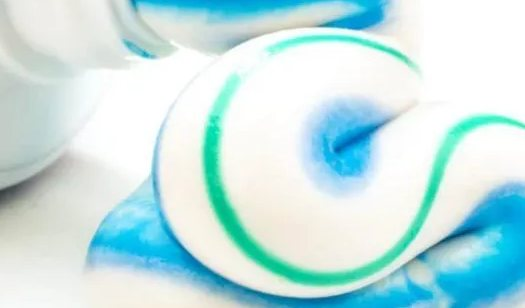

Toothpaste
How to Make Delicious Toothpaste

Steps
- Combine baking soda and salt.
- Add softened or MCT coconut oil to dry ingredients. Stir with fork to combine.
- Add 1 to 2 teaspoons of arrowroot powder to this recipe after all other ingredients are mixed to help thicken the paste. ...
- Store in a cool, dark place for up to 3 weeks.
Enjoy your toothpaste, you pasty wizard!